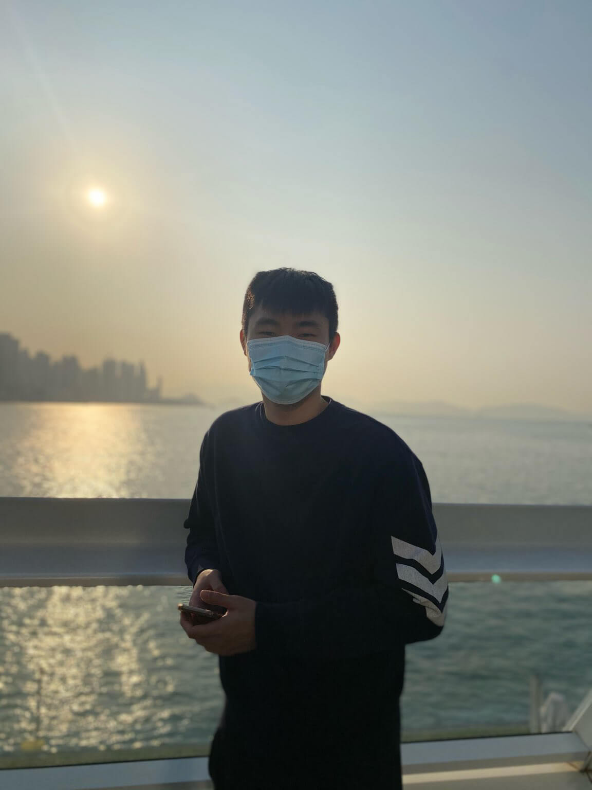

Hello, 😑 I`m
Wingo
.👨🏻🎨 Born in Multimedia & Creative Coding
👨🏻🎨 UIUX | Multimedia Field | P5.js
🎮 Game Develop in University Period
🎮 UnityC# | Game Deisgn | Pixel Art
👨🏻💻 Now, I am Frontend developer
👨🏻💻 React.js | Vue.js | Javascript | SCSS
Hello, I`m Wingo. I am a Frontend Developer in Pengtai Greater China Company Limited. I was Kontec Development LTD`s Junior Software Engineer around 7 months. I graduated from City University of Hong Kong with a Bachelor of Arts and Science in New Media. Also, I like creative thinking, learning. Now, I am mainly studing algorithms and data structure, I hope to be a Master of Frontend Developer / Engineer.
Wingo born in design and multimedia field in early periods, also Wingo studied creative coding and game field in University periods. Moreover, Wingo joined “Software Art Studio” coding course in final year, Wingo understanding a lot of knowledges such as algorithms, Crypto theory (NFT, PoS & PoW), and through API make some artwork. It is a turning point for him in final year, he quit a game develop field and mainly studing and learning in Frontend field. Now, Wingo is a Frontend developer.
Copyright 2021-2022 © Wingo Chan